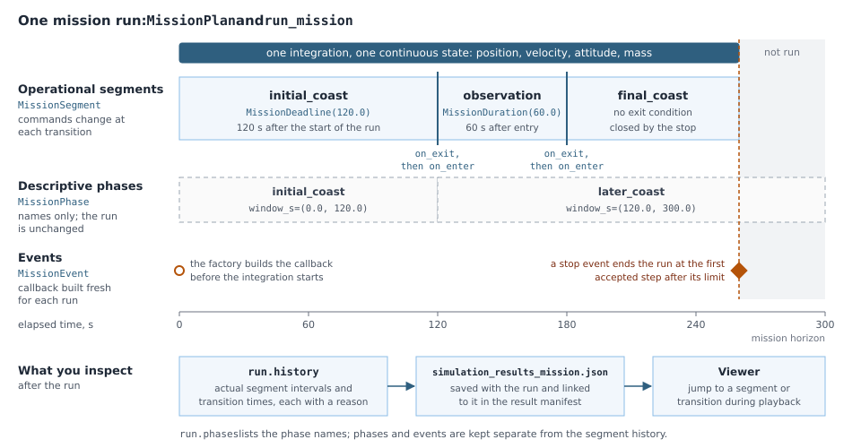

Define, run and inspect a mission
A mission starts with the same SimulationConfiguration used by every SpaceAGORA run. A MissionPlan gives that configuration a reusable builder and a name, and can collect operational segments, descriptive phases and event callback factories. All segments share one integration and one continuous physical state.
The workflow has three steps: define the configuration, run it into a fresh output directory, then inspect the returned data or open the saved viewer payload. The viewer can run independently of the simulation package.

The diagram uses the three-segment example and the two phase windows below; the stop event is placed for illustration.
Build the configuration inside a function
Put spacecraft, controllers and other mutable model state inside the builder. Calling the plan again then starts from a fresh configuration. The engine also retains its normal state isolation, so the returned configuration contains the objects that actually ran.
This complete example uses analytic Earth gravity and no atmosphere or SPICE assets. The numerical choices are explicit in the configuration builder; the mission wrapper preserves them.
using SpaceAGORA
function build_coast(; duration_s=300.0)
planet = make_no_gram_planet(:earth)
spacecraft = make_three_body_spacecraft(
bus_dims=(2.0, 2.0, 2.0), panel_dims=(0.02, 2.0, 1.0),
bus_mass=500.0, panel_mass_each=10.0, panel_offset_y=2.0,
ic=InitialCondition(ra=7.0e6, rp=7.0e6, i=45.0, ω=0.0, Ω=0.0, ν=0.0),
prop_mass=0.0, id=1)
return make_example_config(
planet=planet, spacecraft=spacecraft, mission_time=Float64(duration_s),
initial_time=InitialTime(year=2024, month=1, day=1),
dynamic_effectors=(InverseSquaredJ2GravityModel(),),
density_model=NoAtmosphereModel(),
ephemerides_model=SimpleEphemeridesModel(),
orientation_sim=false, keplerian=true, verbose=false,
solver_config=SolverConfig(solver_mode=:tsit5, parallel=false))
end
mission = MissionPlan("Earth coast", build_coast)
run = run_mission(mission;
parameters=(duration_s=300.0,), output_dir="output/earth-coast-001")
run.results.table # the saved samples, already available in memory
run.results.configuration # the isolated configuration used by the engine
run.files # files written by this run
run.payload_path # portable viewer JSONoutput_dir must be absent or empty. Reuse the plan with another destination for the next run. The workflow refuses a populated directory instead of replacing an earlier result. It also refuses checkpoint writing and resume; those workflows continue to use run_simulation directly.
The wrapper changes only output settings: it enables results, chooses the output directory and sets the scene-output flag. It preserves the builder's dynamics, GNC, epoch, solver, tolerances and output sampling. The MissionConfiguration still sets the overall horizon or orbit-count termination. A completed final operational segment can end the run earlier. Descriptive phases do not change the run, and an event shortens it only when its callback implements a stop.
Inspect data or open the viewer later
By default the workflow saves the normal result files, the scene sidecar and simulation_results_viewer.json. The JSON contains the renderer-ready data and can be viewed after the simulation process has ended. The default payload omits surface textures to keep the portable output small; a richer payload can be exported later from the saved bundle without rerunning the simulation.
Install the independent viewer using the visualization guide, then use:
using SpaceAGORAVisualizer
SpaceAGORAVisualizer.visualize("output/earth-coast-001")You can move or copy that run directory and pass its new path to the viewer. The live MissionRun object retains its original paths; it is not needed to view the moved payload. The viewer does not need the configuration builder, SpaceAGORA, GRAM or MuJoCo to display this saved data.
With both packages loaded, SpaceAGORAVisualizer.visualize(run) uses the saved payload directly. To rebuild a page with different export options, call export_visualization(run) explicitly. It reads the saved scene and result bundle; it does not propagate again. To save only result tables and their bundle, set save_scene=false and save_payload=false together. A payload requires scene output and enabled result bundles. The wrapper rejects an incompatible output request before creating its destination.
run.results.solution is nothing unless you pass return_solution=true. The returned table follows the configured output sampling; it is not a promise that every accepted solver step or event instant appears as a row.
Divide a mission into operational segments
A MissionSegment defines what happens between two transitions. The first segment starts with the simulation. When its exit condition is met, SpaceAGORA calls its exit action, enters the next segment and continues from the same position, velocity, attitude and mass. It does not construct a new spacecraft or restart its controllers.
This sequence uses the coast configuration above:
mission = MissionPlan("Three coast segments", build_coast;
segments=(
MissionSegment(:initial_coast; until=MissionDeadline(120.0)),
MissionSegment(:observation; until=MissionDuration(60.0)),
MissionSegment(:final_coast),
))
run = run_mission(mission; output_dir="output/three-segments-001")
run.history.segments
run.history.transitions
run.history_pathThe transitions occur at 120 and 180 seconds. MissionDeadline is an absolute elapsed time from the start of the simulation; MissionDuration is measured from entry into its segment. These boundaries are registered with the solver, so they do not wait for the next output sample or controller tick. This example continues to coast throughout because it supplies no command actions.
Only the final segment may omit an exit condition. It then lasts until the mission horizon or another engine stop. Giving the final segment an exit condition ends the simulation when that condition is met. Segment names must be unique, durations must be positive, and a deadline must lie after entry. Every timed boundary must fit within the remaining mission horizon; an invalid boundary is rejected when that segment is entered.
Change a command at a transition
Each segment can provide a build_actions function. It receives the isolated configuration that will actually run, after spacecraft GNC has been composed. Return a named tuple with on_enter and on_exit functions. Capture the run's controller or reference in that factory, rather than a controller from a prior run. Both actions receive a context containing time_s, configuration, a copied solver state, and immutable numerical spacecraft samples in spacecraft.
For example, a controller with a mutable commanded_thrust_N field can be commanded like this:
burn = MissionSegment(:maneuver; until=MissionDuration(20.0),
build_actions=config -> begin
controller = only(config.control_model.control_effectors)
(
on_enter=ctx -> (controller.commanded_thrust_N = 2.0),
on_exit=ctx -> (controller.commanded_thrust_N = 0.0),
)
end)That field is an example of an application controller's interface, not a field shared by every SpaceAGORA controller. The controller must turn its command into force, torque, mass flow and any displayed thruster firing. An exit action must clear every held actuator command that should stop. Changing only a target reference takes effect when its controller next evaluates; changing a held actuator command can take effect at the boundary itself. The segment executor does not automatically disable a controller or reinitialize a planner.
At a segment transition, entry and exit actions run before the usual discrete control and saving callbacks at the same time. Exit precedes entry at an internal boundary. The last active exit action also runs when the engine reaches the horizon or stops early, after its final normal output snapshot. Use these actions for command and reference changes, not to replace the vehicle, environment, solver or state layout. Mutating the copied state does not modify the integrated state. Segment labels never create an instantaneous velocity change.
Transition on a physical condition
A MissionCondition is a scalar function of the current context. For a configuration containing a chaser and a target, this condition ends the segment as their separation crosses 10 metres from above:
using LinearAlgebra: norm
approach = MissionSegment(:approach;
until=MissionCondition(
ctx -> norm(ctx.spacecraft[2].pos_ii - ctx.spacecraft[1].pos_ii) - 10.0;
direction=:falling))Positions and velocities in these samples are inertial SI values. The same samples include mass_kg, and attitude and angular velocity when available. A falling condition must start strictly positive; a rising condition must start strictly negative. Already satisfied conditions are rejected rather than silently skipping a segment. The condition must be finite, deterministic and free of side effects. The solver locates its zero crossing; saving more frames is not what makes the transition precise.
This first implementation keeps the configured models and state dimensions fixed. Segmented runs support :tsit5, :auto_stiff, :rodas5p and :dp8. Other solver modes and external propagators, including MuJoCo, are rejected until their event and state-ownership contracts are qualified. The workflow never substitutes a different solver. Checkpoint/resume remains unsupported. A servicing sequence may change commands for already configured models, but it does not yet transfer physics ownership between SpaceAGORA and an external simulator.
Inspect what actually ran
run.history contains actual segment intervals and transition times, with a reason for each transition. An early stop closes the active segment; future segments are absent. The same history is saved as simulation_results_mission.json and included in the portable viewer payload. The result manifest links the history to that run's scene and trajectory, with content checks to prevent an old record from being attached to new results. Move the complete output folder, including its manifest, to preserve this link. An unbound history file is never attached automatically. History is also saved when scene and payload output are disabled, without associating it with any older scene in that folder.
The standalone viewer can select a segment or transition within the saved playback range and seek to its time. Its current-segment label follows playback and scrubbing. A boundary outside that range remains listed with its actual time, but its jump control is disabled because no pose was saved there. Boundaries retain their recorded times even when trajectory rows are sampled more sparsely; the viewer still interpolates between saved states. Export preserves boundary rows when those rows exist, and refuses a frame budget too small to retain them. This history describes executed operational segments. MissionPhase windows and declared MissionEvent names remain separate metadata.
Name phases without changing the equations
A MissionPhase names an elapsed-time window for interpreting one run:
mission = MissionPlan("Earth coast", build_coast;
phases=(
MissionPhase(:initial_coast; window_s=(0.0, 120.0)),
MissionPhase(:later_coast; window_s=(120.0, 300.0)),
))These windows are observation metadata. They do not switch force models, activate a controller, reset state, add time stops or divide the run into separate solves. The names are available in run.phases, including when an existing stop condition ends the run before a later window is reached. Windows must be finite, ordered, nonoverlapping and within the configured mission-time horizon; gaps are allowed.
The engine already has atmosphere-entry and exit behavior, solver regimes and controller lifecycle rules. A user-defined phase name does not override them. Use operational segments for explicit command transitions. Replacing physical models during a run still needs a separate transition contract.
Give events fresh callback state
A MissionEvent stores a function that builds a solver callback. SpaceAGORA calls that factory once for each run, after epoch alignment, spacecraft GNC composition and state isolation. Its argument is the configuration the engine will use. Mutable callback state belongs inside this factory, so running the same plan twice does not reuse counters or flags from the first run.
This example stops at the first accepted step at or after a requested elapsed time, using the existing discrete callback mechanism:
using OrdinaryDiffEq: DiscreteCallback, terminate!
stop_event = MissionEvent(:coast_limit, config -> begin
fired = Ref(false)
limit_s = min(120.0, config.mission_configuration.mission_time)
condition(u, t, integrator) = !fired[] && t >= limit_s
function stop!(integrator)
fired[] = true
terminate!(integrator)
end
DiscreteCallback(condition, stop!; save_positions=(false, false))
end)
mission = MissionPlan("Earth coast with stop", build_coast; events=(stop_event,))
run = run_mission(mission; output_dir="output/earth-coast-stop-001",
return_solution=true)
run.results.solution.t[end]This is an accepted-step condition, not an exact-time event: the stop can occur later than limit_s, and the final saved table row can precede the stop. See Stopping on a Condition for continuous and discrete conditions and their timing. If an existing callback registers exact time stops, that behavior is retained. A state anchor still replaces the specified state; wrapping it in a MissionEvent does not turn it into a physical burn.
Factories must return a fresh callback or callback set. They should construct callbacks without performing I/O or mutating configuration. Their callback closures may refer to the isolated controller and model objects supplied in config. Returning a callback shared with another run defeats this ownership rule. Existing built-in callbacks retain their ordering; mission callbacks use the existing extra-callback position.
run.event_names records the events that were configured. It is not a log of which conditions fired. Event diagnostics remain with the callback or controller that owns them. Invalid factories are rejected before SpaceAGORA creates run outputs. A failure during propagation follows the existing engine behavior: partial outputs can remain, and the exception is rethrown rather than returned as a successful MissionRun.